Your first personal assistant
In this step-by-step tutorial, you'll create your first personal AI assistant using Latenode. By the end of the tutorial, you'll have a simple yet complete AI assistant that can get natural-language tasks from the Telegram chat and helps you to handle your e-mails, tasks and meetings. See the final schema of the assistant in the image below.
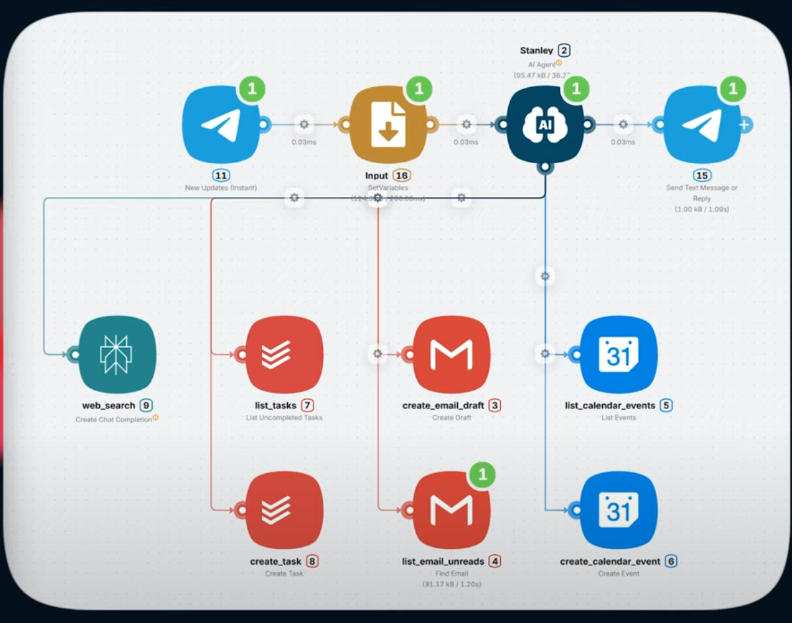
The tutorial assumes that:
- You already have an account and know some Latenode basics. If not, you should go through Getting started first.
- You are using an online-version of Latenode. If you are using a standalone version, some interfaces, links and details may vary.
The major steps are:
Add necessary nodes
In this short first part, we'll fill a new scenario with necessary nodes.
Create a scenario
Let's create a new scenario and add the first node:
- Log in to Latenode and go to scenarios page.
- Press Create a new scenario and optionally set the scenario name at the left corner of the page. For example, let it be
My First AI Assistant. -
Press Add a Node to Begin and choose AI Agent... from the list of available nodes. Then choose common AI Agent node.
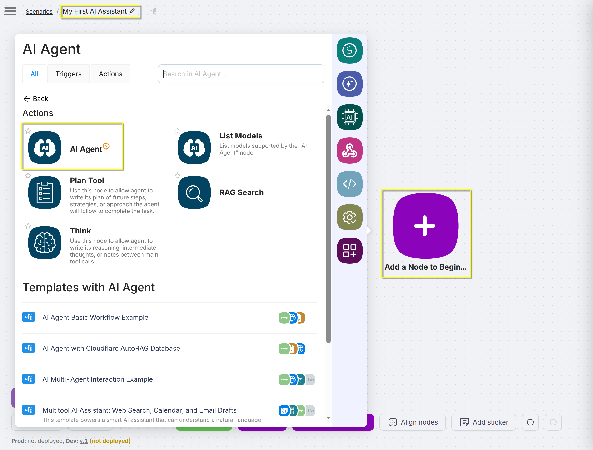
The node appears on the board and the node settings window pops up. Press the node name
UNTITLEDand rename toStanley. For now, leave other settings at their default values and close the window. We'll back here later.
This AI Agent node is the brain of our assistant. It will manage the other nodes.
We want our assistant to be able to read mails and create drafts, check and create events in Google Calendar, list and create tasks in a task tracker. Now, let's add nodes representing these tools.
Add tool nodes
- Press Add node in the bottom menu. Find and click Gmail... app. Use the search field to find it easy.
- Choose the Create Draft node.
- Repeat the process for the Find Email node.
-
Add the following nodes in a similar way:
- List Events and Create Event nodes from the Google Calendar... app.
- List uncompleted tasks and Create Task nodes from the Todoist... app.
- Create Chat Completion from the AI: Perplexity... app. The assistant will use it to search for information on the internet.
-
Connect the AI Agent node with every tool node. You should get a layout like in the image below.
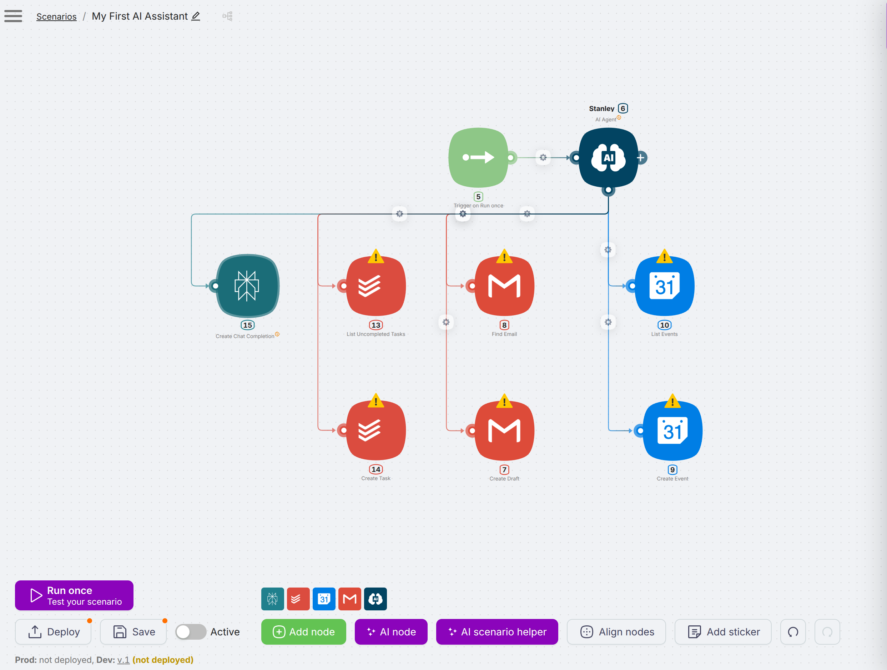
You can see that our tool nodes are marked with yellow triangles. It means that we should configure this nodes properly.
Configure the tools
Authorize Nodes
Let's give authorization tokens to our nodes to connect them with real systems — Todoist, Gmail, and Calendar:
- Click a Todoist node and press Sign in. If you are not authorized in Todoist yet, system prompts you to sign in.
- Sing in if needed. You'll see that the Connection field contains an auth token.
- Press Save and close the window.
- Click another Todoist node and make sure that it has the same auth token appointed. You can manage your authorizations and rename them in Authorizations section in left menu.
- Repeat above steps for Gmail and Calendar nodes. You may need to grant the necessary permissions to Latenode. This is safe.
Fill in fields
Now we need to give our nodes descriptive names, clear descriptions and specify fromAIAgent operator for some fields. It provides the AI Agent with reliable information about these nodes.
- Click Perplexity node and change its name on the top from Untitled to web-search. This is not a trivial step, as the AI agent uses the node name to understand its purpose.
- Tweak tool description like this:
Perplexity is an AI-powered search engine delivering accurate, concise answers and context. - Click the User prompt field, delete prefilled text, and choose the
fromAIAgentoperator in popup menu. Tweak the prompt like this:Your new question prompt. - Press Save.
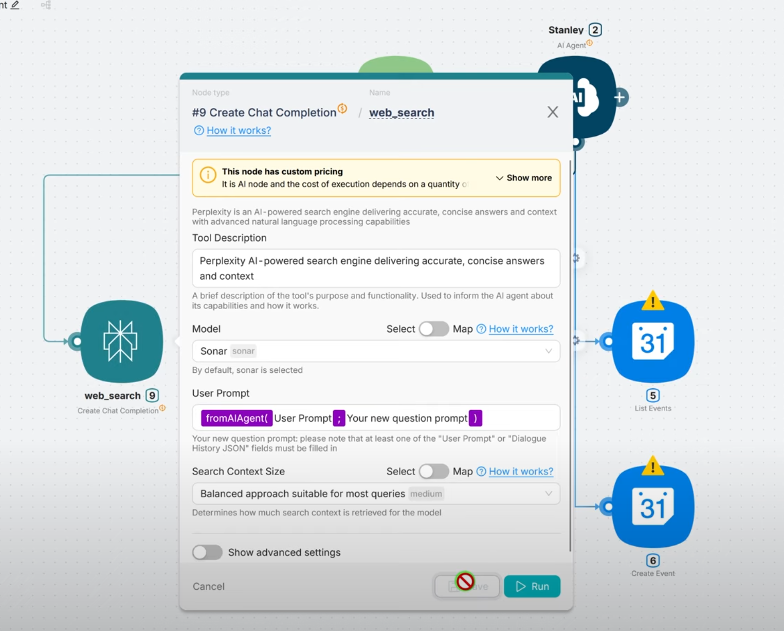
Now let's set up our Google calendar nodes:
- Click List events node and rename it as list_calendar_events.
- In the Calendar ID field choose your Google calendar.
- In the Tool description field insert the following text:
Retrieves events from Google Calendar within the specified window. - Choose your time zone in the Time Zone field.
- Toggle Show advanced settings and find Time Max and Time Min fields. This parameters define the time window we mentioned in tool description. Click Time Max and choose the
fromAIAgentoperator in popup menu. The operator is filled in automatically, but let's tweak the prompt like this:Must be an RFC3339 timestamp with mandatory time zone offset, for example: 2011-06-03T10:00:00+03:00. Hereinafter+03:00is your UTC time zone, replace it accordingly. Repeat this for the Time Min field. - Press Save.
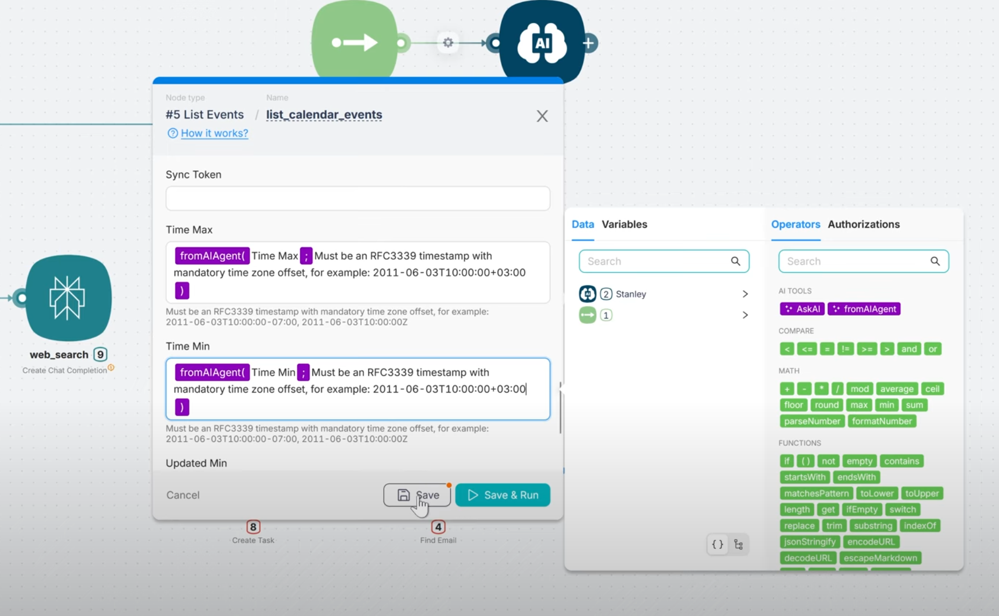
Configure the rest of nodes in a similar way. Corresponding fields are listed below.
-
Create Event:
- Name —
create_calendar_event - Calendar ID — your Google calendar
- Tool description —
Creates a calendar event - Start Date —
Format according to RFC3339: yyyy-mm-dd-Thh:mm:ss+03:00 - End Date —
Format according to RFC3339: yyyy-mm-dd-Thh:mm:ss+03:00 - Summary —
Title of event(by default).Replace defaultSummarywithTitle - Description —
Description
- Name —
-
List Uncompleted Tasks:
- Name —
list_tasks - Tool description —
Fetches all uncompleted tasks from Todoist - Project ID — a project ID from the dropdown list
- Name —
-
Create Task:
- Name —
create_task - Tool description —
Creates task in task tracker - Content — default
fromAIAgentprompt - Priority —
fromAIAgentoperator with promptTask priority from 1 (normal) to 4 (urgent) - Due Datetime —
fromAIAgentoperator with promptSpecific date and time in RFC3339 format in UTC, for example: "2024-09-26T11:30:00+03:00". Leave blank if no date is required.
- Name —
-
Create Draft:
- Name —
create_email_draft - Tool description —
Creates draft (creates an email but not send)(default) - Subject — default
fromAIAgentprompt - Email Body — tweak the default prompt like this:
Include an email body in plain text - To — default
fromAIAgent - From name — your name
- Name —
-
Find Email:
- Name —
list_email_unreads - Tool description —
Finds an email message - Label ID —
UNREAD
- Name —
The tools are configured and now we should set up a communication environment to speak with our AI Agent.
Set up the environment
Note
In this tutorial we will use a Telegram bot. But generally, instead of it you can use Mailhook or any similar tool.
Create a bot
Let's configure a Telegram bot to communicate with our assistant:
- Log in to Telegram. If you don't have one, you can install a desktop version from the official site and sign up.
- Search for the
@botfatherbot in the search field and go to the dialogue. 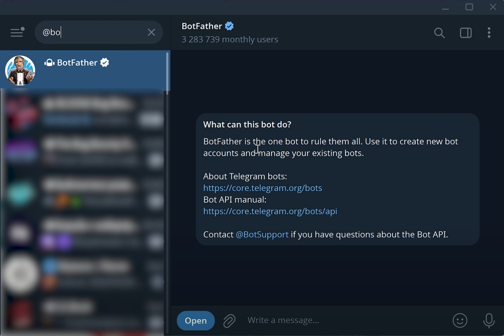 - Press Create a new bot in the interface.
- Set up the bot name as
Stanleyand bot username asstanely_assistant_<you own nickname>. Press Create Bot. - Copy the API token of the bot to the clipboard.
- Go to Latenode, choose Authorizations from the left panel and create a new authorization for Telegram bot. Paste the API token here and click Authorize.
Add Telegram nodes
Now we need to add Telegram nodes to our scenario:
- Delete the default Trigger on Run once node from the scenario.
- Press Add node, find Telegram app and choose New Updates (Instant) node. Connect it to the AI Agent node in place of deleted trigger.
- Click the added node and choose the authorization we've added earlier.
- In the Allowed updates field choose
message, so the node will trigger on every message. - Press Add node, find Telegram app and choose the Send Text Message or Reply node. Connect the AI Agent node to it, like in image below. It will receive replies from our agent.
- Add authorization to this node as above and fill the Chat ID and Text fields with
1as placeholders.
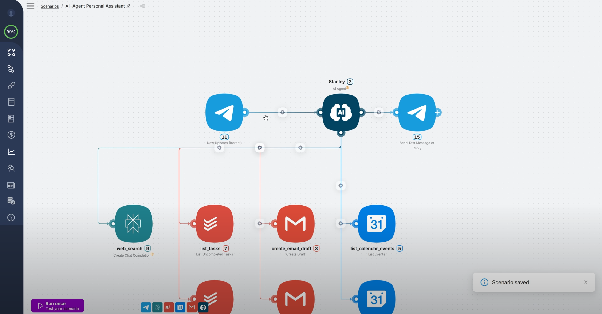
Add a variable handler
Set up how to handle messages sent by the Telegram bot:
- Click the New Updates (Instant) node and press the Run button. It triggers a mock message. The JSON-structure of the message appears in a popup window. You may investigate it shortly. We are interested in
chat.idandtextfields. - Click Add node and find the SetVariables node. Place and connect it between the New Updates (Instant) and the AI Agent node, like in image below. The node will store necessary JSON variables of the message.
- Click the SetVariables node, rename it to
Inputand add two keys:messageandchat_id. - For the
messagekey click the Value field, choose Telegram in the popup menu, find thetextfield and click an arrow icon to import the path as a value. -
Repeat for the
chat_idkey but with thechat.idfield instead.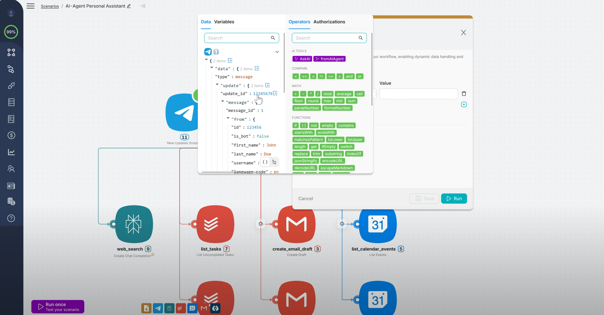
-
Go back to the Send Text Message or Reply node and set
_.chat_idvariable for the Chat ID node.
We have just finished setting up the configuration for the Telegram bot and the related nodes. Now, we should configure the AI Agent node itself.
Configure the agent
Set up the memory
- Click the AI Agent node.
- Click the Session ID field. In the appeared menu go to Tools → Variables tab and choose
chat_idvariable. - Click the User Prompt field. In the appeared menu go to Tools → Variables tab and choose
messagevariable. Now our agent gets the context from the Telegram chat that we configured before. - (Optional) Toggle Show advanced settings and look at the Context window length field. It defines how many previous messages the agent remembers. The default value is
25and it is fine for this tutorial, let's keep it. You can increase this value in the future if necessary for your needs. But keep in mind that higher values increase a probability of hallucinations.
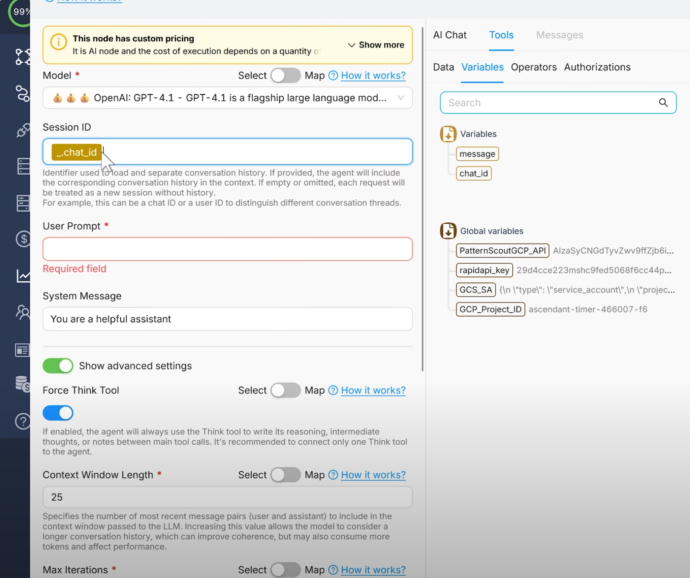
Prepare a system prompt
Now let's provide our agent with a system prompt. This is the most important part of any AI assistant, as it defines it's general behavior. For this tutorial, we'll use our pre-prepared prompt, but we generally recommend checking out our Prompting Guide.
-
Familiarize yourself with the prompt below and copy it to clipboard:
# Personality You are **Stanley**, a pragmatic, friendly personal assistant. You keep <Username> organized and ask the essential questions. # Environment You run in **Telegram** chat. You orchestrate tools (Google Calendar, Todoist, Gmail, AI Web Search/Perplexity) but cannot see <Username>'s screen. Assume local time is <your timezone, e.g., **UTC+03:00 (Asia/Nicosia)**>. # Tone Be concise and direct: 1-3 short sentences, bullets when useful. In replies, use **conversational dates** (e.g., "today at 19:00", "on Friday afternoon"). # Goal Help <Username> with time management, task tracking, and project coordination using the tools available to you (calendar, task tracker, email, wes search). # Guardrails In **tool calls** always pass timestamps in **RFC3339 format + <your UTC time difference, e.g., 03:00>**. In chat keep conversational times. # Tools - `list_calendar_events` — get calendar events for a time range. - Use to present upcoming events, check conflicts, or fetch details needed for scheduling. - Use before proposing a plan for a day/week or when <Username> asks "When am I free/busy?" - `create_calendar_event` — create a calendar event. - Use after confirming title, date/time, duration, and attendees. Include a Meet link if available. - `list_tasks` — fetch incomplete Todoist tasks. - Use to create a prioritized plan; sort by due date then importance; call out overdue items. - `create_task` — create a Todoist task. - Use to capture action items from chat or email; include due date/time and labels if provided. - `list_email_inbox` — get inbox email messages. - Use to triage unread mail and extract actionable items (meetings, invoices, requests). - `create_email_draft` — create email drafts. - Use to write replies with clear nest steps (e.g., propose 2-3 time slots, bullet answers). - `web_search` — perplexity AI search. - Use for quick research, examples, or facts to enrich replies or proposals (keep it brief: 2-3 bullets). # Workflow - **Stay current:** Before acting, ensure you have the required context from `list_calendar_events`, `retrieve_calendar_events`, `list_tasks`, and (if relevant) `list_email_inbox`. If you already checked it within the last **3 hours**, you are up to date. - **Email triage:** - If an email mentions *demo/meeting/call* → check availability with `retrieve_calendar_events`, propose 2-3 slots, then `create_calendar_event` + `create_email_draft`. - If an email mentions *invoice/payment/deadline* → `create_task` with due date and label; draft a brief acknowledgment if needed. - **Planing:** When <Username> asks to plan a day/week, pull `retrieve_calendar_events` and `list_tasks`, propose a realistic schedule, then create events/tasks after a confirmation. - **Review:** On request, produce a concise daily/weekly review (completed vs. pending, upcoming deadlines, meetings to confirm). # User context - Name: **<Username>**; lives in **<City> (<UTC Timezone>)**. - Role: <Your role and duties> - Typical sleep: **<Your do-not-disturb time window>** (avoid scheduling here unless asked). - Preferences: default meeting length **30 min**. # Current time `{{now}}` (in UTC) -
Paste it to the System message field and replace all the placeholders (
<>) with you Telegram Username, timezone, city, and role. You can also edit and tweak the prompt as needed. - In the Model field choose an LLM to handle your requests. For this assistant we recommend choosing the
OpenAI: GPT-5 mini, as it is relatively cheap and would be enough for our tasks.
Connect the output
We need to connect the agent's response to the Telegram node Send Text Message or Reply.
- Click the AI Agent node and press Run. It returns a JSON structure of the agent's response.
- Go to the Send Text Message or Reply node and delete placeholder
1from the Text field. - Click the Text field and in the right menu choose Stanley then press an arrow icon for the
textkey in JSON structure. The key is now imported into the field, as shown in the image below. - Click Save.
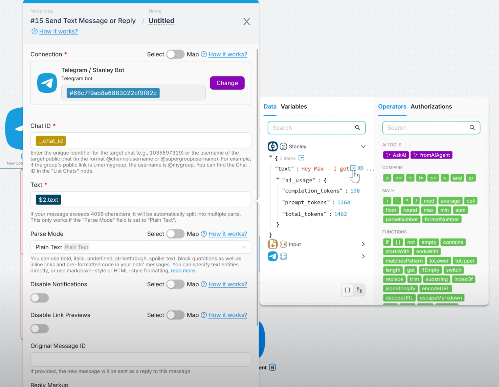
All the configurations are done, and you can test how your first assistant works.
Test the result
Let's have a look at a scenario when the assistant may be helpful. Below it is just an example, you can vary it as you'd like. You can also prepare some mock "urgent" Emails and tasks if you'd like to test that the assistant handles it right.
- Go to the Telegram dialogue with the bot. Ask him to check if there are anything urgent in your Email box.
- Ask him to draft the reply for an Email and appoint a meeting.
- Check the result in your Email, Todoist and Google Calendar.
See an example in the images below.
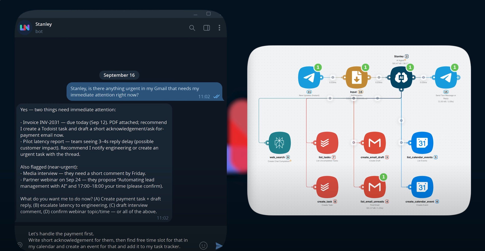 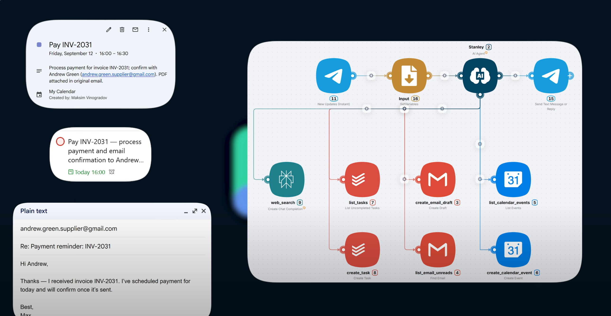
Instead of manual handling this three tools now you can manage them all by a single Telegram bot.
What's next
Think about your daily routines and how you could create an assistant to automate them. The links below might help.
- To learn more about the Latenode Nodes and and their features, see the Node concept as well as Node Reference.
- Check out How to create a scenario and How to create an efficient prompt guides.
Feel free to visit our Community Forum and ask an advice.